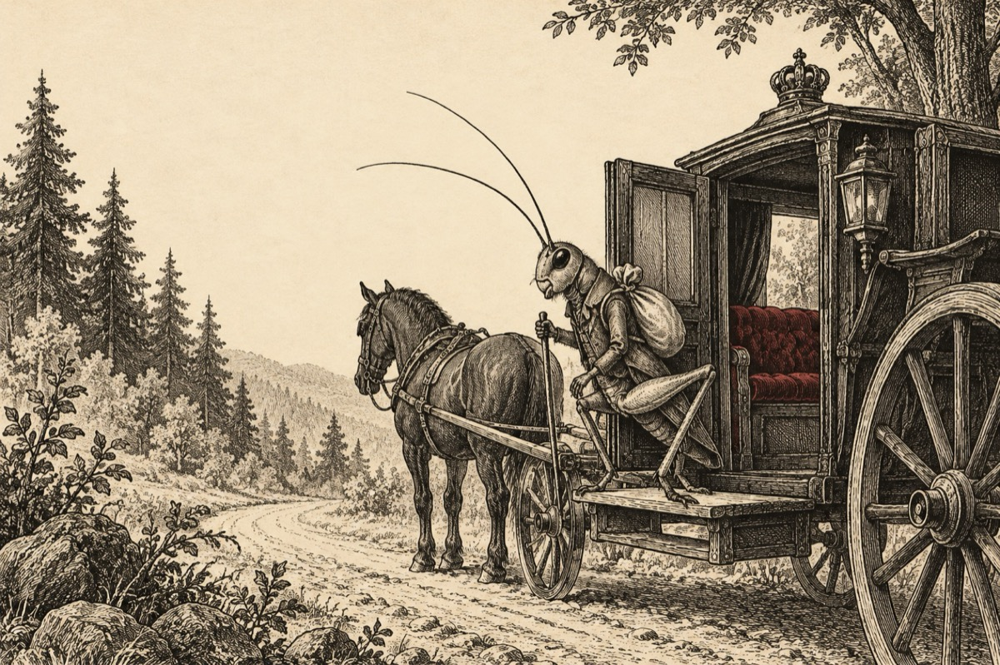

Greierașul Țup
La plecarea din Pipera.
Dornic să se ducă-n lume
Greierașul Țup, Țup, Țopu’
N-a mai vrut să stea-n pădure
Plecând cu autostopu’!
S-a urcat într-o caleașcă
Care i-a ieșit în drum
Încercând ca să cunoască
Viața scăldată-n parfum!
Ori că a fost plănuit
Sau c-așa s-a întâmplat,
În caleașc-a nimerit
Ca de altfel și-n palat
Un rege puțin smintit!
Avea-n loc de geant-un sac,
Coroana inversă-n cap,
Din sceptru-a făcut baston
Tronul l-a pus în dulap.
Iar pe greiere bufon.
Purta hainele pe dos,
Și pantofii inversați
Fiind tare ,,norocos”!
Toți din jur handicapați.
Consilierul n-avea nas,
I-l mâncase un purcel.
Cu capul ce i-a rămas,
Avea grijă doar de el.
Sfetnicul cu o feștilă
Alerga dârz prin palat,
Ca să prindă o cămilă
Ce-i mâncase un halat!
Iar frizerul angajat
Se ferea de-mbucătură
Stând într-una nemâncat,
Fiindc-avea un păr în gură!
Pivnicerul avea părul,
Până colo la călcâie.
Spunea la toți să se știe
Nu se tunde orice-ar fi
Că i-e frică de chelie!
Greierașul Țup, Țup, Țop,
De mărimea unui dop
Și-a pus frac și papion,
Și-un joben pe-a sa măsură.
Dându-se drept campion
Și că-i tare bun de gură!
Ca solist la chitară și trombon!
Și făcând, ce știa face,
Fel de fel de ghidușii,
Pe când toți voiau să-l calce,
Se hotărâ și fugi.
Pe nebunii din palat
Neputând ca să-I împace,
Și-a luat lumea în cap
Cu gândul de-a se întoarce,
Exact de unde-a plecat.
Și-acum cântă de mă crezi,
În al greierilor cor
Prin păduri și prin livezi,
Cu un glas fermecător!
Vasile Groza
Apare și în: Copile sau Cartea copiilor, Poezii cu animale.